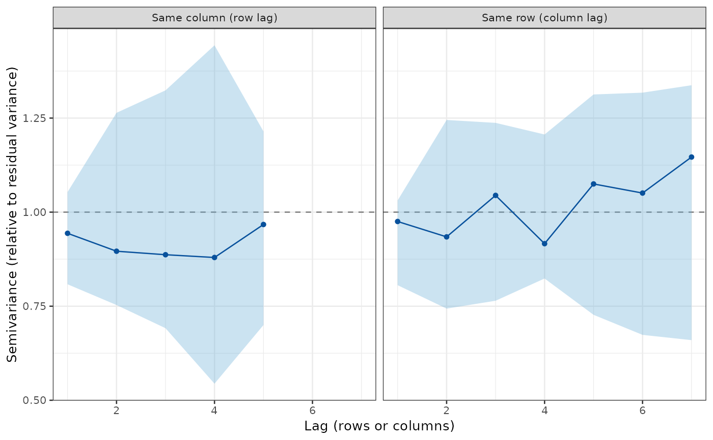

A correlation structure for nlme::gls() and nlme::lme(): the
correlation of two plots is \(\phi_r^{|dr|}\phi_c^{|dc|}\), with \(dr\) and
\(dc\) their distances in rows and columns (Gilmour, Cullis and Verbyla 1997),
as Genstat's VSTRUCTURE AR,AR and ASReml's ar1(row):ar1(col).
Usage
corAR1xAR1(
value = c(0.5, 0.5),
form = ~row + col,
nugget = FALSE,
fixed = FALSE
)Arguments
- value
Starting values of \(\phi_r\) and \(\phi_c\) (in (-1, 1)), and of the nugget share (in (0, 1)) when
nugget = TRUE.- form
~ row + color~ row + col | group: integer row and column positions of the plots over the whole field (one AR1 x AR1 per group, the same \(\phi\)).- nugget
An independent plot error besides the AR1 x AR1 part: the correlation is \((1 - n)\phi_r^{|dr|}\phi_c^{|dc|}\) off the diagonal, n the share of the plot variance.
- fixed
Keep the starting values (not estimated)?
Value
An object of class c("corAR1xAR1", "corStruct") for the
correlation argument; coef(fit$modelStruct$corStruct,
unconstrained = FALSE) gives \(\phi_r\), \(\phi_c\) (and the nugget share).
Details
The row and column are integer positions over the whole field, so plots
missing from the grid need nothing: the correlation of the plots present is
the sub-matrix. In gls() the structure covers all plots (or each
group). In lme() a correlation acts only within the groups of the
innermost random effect: with random = ~ 1 | rep the AR1 x AR1 would be
within each replicate. For replicate (block) effects plus an AR1 x AR1 over
the whole field, as Genstat and ASReml fit it, put the random effects in one
group: lme(y ~ variety, random = list(all = pdIdent(~ rep - 1)),
correlation = corAR1xAR1(form = ~ row + col | all)) with all = factor(1).
With nugget = TRUE the plot variance is split into an AR1 x AR1 part and
an independent part, the nugget share \(n\); Genstat's units term
with the AR1 x AR1 term scaled by a ratio \(g\) is the same model with
\(n = 1/(1 + g)\) (with AR1 x AR1 as the residual and units as a random term,
\(n = g/(1 + g)\)). Each likelihood uses a dense matrix of the plots of a
group: a fit takes about a second for 150 plots, 10 s for 600 and minutes for
2000 (above 1000 plots in a group a message points to the smooth trend).
A smooth field trend is the other common spatial model:
semireg(y ~ variety + t2(row, col) + (1 | rowf) + (1 | colf), data = d), a
smooth surface over the field as SpATS fits, often as good as AR1 x AR1 in
practice (on Slate Hall the AR1 x AR1 means are the more precise: average SED
0.590 against 0.668). residvariogram() shows whether a fit leaves
spatial correlation.
Checked against Genstat (REML Guide's Slate Hall trial): \(\phi\) and the
variances to Genstat's printed digits; the 25 variety means and all 300 SEDs of
each model within 5e-6 (tested to 1e-5); the Wald statistic; the d.d.f. of the
variety test with df_method = "KR-average". Kenward-Roger and
Satterthwaite leave out variance components (and a nugget) estimated at 0.
Normalized residuals, and so the residvariogram() check of such a fit,
depend a little on the order of the plots in the data: sort the data by trial,
row and column before fitting so the check can be repeated.
References
Gilmour, A. R., Cullis, B. R. and Verbyla, A. P. (1997). Accounting for natural and extraneous variation in the analysis of field experiments. Journal of Agricultural, Biological, and Environmental Statistics, 2, 269-293. doi:10.2307/1400446
Examples
# \donttest{
d <- read.csv(system.file("extdata", "slatehall.csv", package = "predictmeans"))
d$variety <- factor(d$variety)
fit <- nlme::gls(yield ~ variety, data = d, correlation = corAR1xAR1(form = ~ fieldrow + fieldcolumn))
coef(fit$modelStruct$corStruct, unconstrained = FALSE) # Genstat: 0.4586, 0.6838
#> phi_row phi_col
#> 0.4586104 0.6837671
pm <- predictmeans(fit, "variety")
head(pm$means)
#> variety estimate std.error df conf.low conf.high comparison.low
#> 1 1 12.57981 0.6523784 37.60168 11.25868 13.90094 11.98265
#> 2 2 15.01442 0.6560279 37.82468 13.68616 16.34268 14.41393
#> 3 3 14.04987 0.6524791 36.63780 12.72738 15.37236 13.45263
#> 4 4 14.12569 0.6553375 37.62565 12.79859 15.45278 13.52582
#> 5 5 15.14481 0.6626651 38.18907 13.80353 16.48608 14.53824
#> 6 6 15.53462 0.6471393 36.38773 14.22265 16.84660 14.94226
#> comparison.high n estimable
#> 1 13.17696 6 TRUE
#> 2 15.61492 6 TRUE
#> 3 14.64712 6 TRUE
#> 4 14.72555 6 TRUE
#> 5 15.75138 6 TRUE
#> 6 16.12698 6 TRUE
residvariogram(fit, row = "fieldrow", col = "fieldcolumn", data = d, nsim = 19) # a few seconds

#> Sample variogram of normalized residuals on the row x column grid
#> Semivariance relative to the residual variance: about 1 without spatial pattern.
#> Global envelope test (95%, 19 simulations from the model): p = 0.2
#>
#> Lags along rows and columns (all 47 lags: as.data.frame(x); the surface: autoplot(x, type = "surface")):
#> lag_row lag_col n_pairs gamma lower upper outside
#> 1 0 135 0.944 0.808 1.05 FALSE
#> 2 0 120 0.896 0.753 1.26 FALSE
#> 3 0 105 0.887 0.692 1.32 FALSE
#> 4 0 90 0.879 0.544 1.44 FALSE
#> 5 0 75 0.967 0.700 1.21 FALSE
#> 0 1 140 0.975 0.806 1.03 FALSE
#> 0 2 130 0.934 0.744 1.24 FALSE
#> 0 3 120 1.045 0.765 1.24 FALSE
#> 0 4 110 0.916 0.824 1.21 FALSE
#> 0 5 100 1.075 0.727 1.31 FALSE
#> 0 6 90 1.051 0.674 1.32 FALSE
#> 0 7 80 1.146 0.660 1.34 FALSE
# }